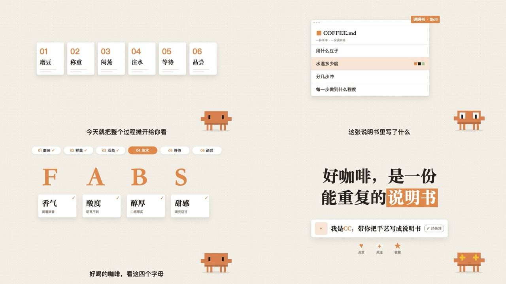

适用：步骤 / 流程 / 证据整理
固定工作台保留卡片身份，卡片换位并让步骤条接住进度。
在我们这里如何使用：画面不能退化成一屏一条句子；优先让证据对象变化。

来自 weilanx README。其作品预览、配方与组件已保存；作者原配音、真人素材和音乐并未在上游公开。
固定工作台保留卡片身份，卡片换位并让步骤条接住进度。
在我们这里如何使用：画面不能退化成一屏一条句子；优先让证据对象变化。
一张暖米色的点阵纸就是整支片子的「工作台」：右下角常驻一个像素小人当吉祥物，白色窗口卡片、步骤条、表格、代码、选项一层层摆上来又收走，标题是粗黑体 + 一块橙色高亮。适合 3～4 分钟的口播流程拆解（「我是怎么用 AI 做 XX 的」「一件事分几步」）。做新一期用 weilanx-creator-desk-video 技能（口播骨架 DeskShow）。画面语法是从参考视频里拆出来的（参考视频不进 git），组件和示例都是重写的，没有沿用原片的内容、文案、吉祥物和创作者形象。
#f3efe7 平涂 + 22px 极淡点阵 + 两团缓慢漂移的暖色柔光、四角轻微压暗；可选背景漂浮几何（细线圆环、十字、虚线弧）。镜头在每个场景里缓慢推近 2.5%，卡片带纸张叠层和回弹去模糊的入场。#211d19；唯一的强调色是偏红的亮朱橙 #f15a35（大色块用左上亮右下深的渐变）（数字、高亮块、当前步骤、强调词），浅橙 #fde5dc 做行高亮底；灰 #8b857b 做次要字。整片饱和度很低，橙色只占 2–3%。| 文件 | 组件 |
|---|---|
src/library/warm-desk/theme.ts |
配色 D、橙色渐变 OG、字体 DF（阿里巴巴普惠体 Desk Sans）、rise 回弹去模糊上浮、slide 平滑换位、typeIn 逐字升起、wipe 高亮刷入、drift 漂浮 |
src/library/warm-desk/stage.tsx |
DeskBg 点阵纸（柔光晕）、DeskDecor 漂浮几何、Sparkle 星光迸发、Tick 对勾、StepBar 步骤条、ChapterTitle 章节大标题（描边大编号 + PART 胶囊 + 进度点）、Headline 粗黑体标题（kicker 眉标、〔词〕 橙块高亮）、DCaption 字幕、WindowCard 窗口卡（stack 叠纸、accent 角标）、Tag 橙色小标签、SayBubble 头像气泡、Leave 倾斜滑走容器、Rise 淡入上浮容器 |
src/library/warm-desk/props.tsx |
ListCard 清单卡（逐行高亮、色块）、OptionCard 选项卡、SpeedCards 语速卡、CharTimeline 逐字时间轴、TableCard 表格卡、LetterCards 字母卡、CodeCard 代码卡（dark 深色终端）、Seesaw 跷跷板、ThumbGrid 缩略图墙、Waveform 声波、BigCount 大号计数、FollowCard 关注卡、Icon 图标、CardFan 叠放卡片 |
src/library/warm-desk/motifs.tsx |
主视觉：Badge 旋转徽章、Chips 特性卡、LineIcon、IconCards 图标大卡、MysteryCards 悬念卡、FilmStrip 胶片条、Rings 同心圆、PlayerCard 播放卡、FlowCards 流程卡 |
src/library/warm-desk/HostCam.tsx |
HostCam 真人出镜小窗（左下角，A-roll 大 / B-roll 小） |
src/library/warm-desk/DeskShow.tsx |
DeskShow 口播骨架（场景表、步骤条、吉祥物、字幕、三轨音频、首帧封面、decor 漂浮几何、push 场景内缓推、overlay 出镜小窗） |
src/library/warm-desk/CoverTall.tsx |
DeskCoverTall 3:4 封面、DeskCoverWide 横版首帧封面 |
src/library/warm-desk/mascot.tsx |
DeskMascot 右下角像素吉祥物（素材库自己的 PixelBuddy，eyes 表情、轻微上下浮动、hop 跳一下）、PixelEmote 像素「!」「?」「♪」「…」 |
src/library/warm-desk/（目录见 src/library/README.md「暖纸工作台风」一节）library-warm-desk（src/library/previews/WarmDeskDemo.tsx）PixelBuddy（CC），只学「右下角常驻 + 换表情 + 头顶像素小反应」的用法。| 期数 | 内容 | 备注 |
|---|---|---|
| ep26-opus-video | Opus 5.5 做视频（开场 52 秒试片） | 第一次真人出镜：左下角小窗 A/B-roll；用户反馈「太素」后升级成朱橙 + 普惠体 + 主视觉图形，人声降到 −19 LUFS |